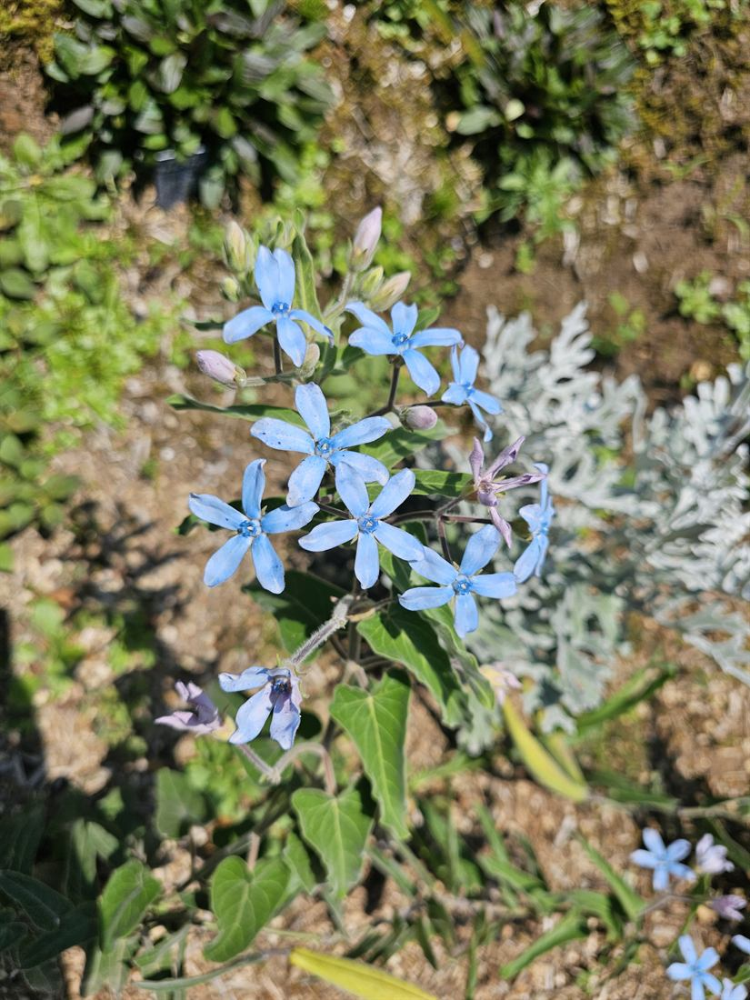

ブルースター（オキシペタラム／瑠璃唐綿）
Tweedia caerulea D.Don ex Sweet
英名 · blue star ／ caerulea ＝ ラテン語で「空色の」
キョウチクトウ科 · Apocynaceae（ガガイモ亜科）
燻太さんの言葉「色の移り変わりも綺麗。まるで水彩画のような、淡い色合い」……その「移り変わり」が、図鑑の色の物語の“三つ目の答え”だった。
⭐⭐⭐ 図鑑の「色の物語」に、三つ目の答えが来た
- この図鑑には、もう「色が変わる花」が二人いる。
027 ニオイバンマツリ：紫 → うすい紫 → 白。アントシアニンが、抜けていく（色素が減る）。
039 スイフヨウ：白 → 桃 → 紅。アントシアニンが、たまっていく（色素が増える）。 - そして、この子。淡い水色 → 青 → 藤色・赤紫。
- でも、この子のやり方は、上の二人とちがう。
- アントシアニンは、酸性だと赤く、中性に近づくと青く見える。同じ色素分子が、まわりの条件で色を変える。（さらに金属イオンや共色素も青の発色を左右する）
- いちばん有名な例が、アジサイ。土のpHとアルミニウムで、同じ株が青にも赤にもなる。
- ブルースターの「青 → 赤紫」も、この「色素をとりまく条件が変わる」タイプと考えられる。花が老いるにつれて液胞が酸性に傾くと、青は赤紫へ振れる。
- ⭐つまり——
027：色素の量が、減る
039：色素の量が、増える
045：色素はそのまま。「まわりの条件」が変わる
色を変える方法が、三つそろった。 - ⚠正直に：ブルースター固有の色変化機構を確定した研究を、陽介は確認できていない。だから「考えられる」と書く。アントシアニンの色がpHで変わることは確かな事実だが、この花でそれが起きていると断言はしない。
「水彩画のような」は、正確だった
- 若い花：淡い水色
- 咲き進んだ花：青に、紫の斑点がにじみ出はじめている（まだらに、部分的に変わる）
- 終わりかけの花：まるごと藤色〜赤紫
- 「まだらに、じわっと」変わるから、水彩画のように見える。燻太さんの言葉が、そのまま観察記録になっている。
⭐⭐ 中心の「小さな冠」── そして、ランと同じ発明
- 青い星の中心にある小さな冠のような構造＝副花冠（corona）。ガガイモ亜科の目印。
- そして、この亜科の花は、とんでもないことをする。
- 花粉が、粉ではない。花粉が塊にまとまった 花粉塊（pollinia） になっている。虫が花に脚をかけると、花粉塊が丸ごと脚にくっついて次の花へ運ばれる。粉をまぶすのではなく、荷物を渡す。
- ⭐同じことをする植物が、もうひとつだけある。ラン科。
- 002 ネジバナ——うちの図鑑の、ラン科の子。
- ラン科とガガイモ亜科は、遠く離れた別の系統。それなのに独立に、同じ「花粉をパッケージにする」という発明にたどりついた。
果実は「風船」── 031 フウセンカズラとつながる
- 果実は細長い袋（袋果）。写真にも写っている。熟すと割れて、綿毛のついた種がふわふわ飛ぶ。
- ⭐031 フウセンカズラのページで、「もっと大きな風船をつける植物」として名前を出した フウセントウワタ（Gomphocarpus physocarpus）——あの子も、この045と同じキョウチクトウ科（ガガイモ亜科）。
- とげとげの大きな風船を割ると、綿毛の種がふわーっと出てくる——あれは、この子の果実の、ふくらんだ版。
- → だから、おまけは「フウセントウワタ」にした。031で名前だけ出した子を、いよいよ探しに行く。
学名の由来と、この植物のこと
- Tweedia＝スコットランドの園芸家 ジェームズ・トウィーディーにちなむ。南米で植物を採集した人。
→ 003・027・028・029・036・040（神話のキロン）に続く、「人の名前をもらった花」の7人目。 - caerulea＝ラテン語で「空色の・青い」。別名の属名 Oxypetalum＝oxys（鋭い）＋petalon（花弁）＝尖った花びら。
- 和名 ルリトウワタ（瑠璃唐綿）＝「瑠璃色の、唐綿」。綿毛の種のことが、和名に入っている。
- ブルースターは、結婚式の花。欧米の「something blue（花嫁が身につける青いもの＝幸せを呼ぶ）」に使われる、数少ない天然の青い花。ブーケの定番。
- ⚠茎や葉を切ると、白い乳液が出る。キョウチクトウ科の特徴。有毒で、肌が弱い人はかぶれることがある。